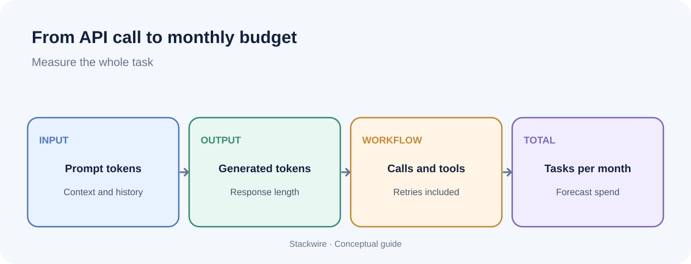

SaaS and AI
How to calculate AI API costs before you ship a feature
An AI feature can look inexpensive in a demo and become a margin problem after customers use it every day. The fix is not guesswork. Estimate the cost of one completed task, multiply it by realistic usage, then test the assumptions against real API logs.

To estimate AI API cost, multiply input tokens and output tokens by their respective per-token prices, add any tool, image, audio or other charges, and include retries and failed requests. Calculate the result per successful customer task, then multiply by expected monthly tasks. Always use the provider's current pricing page for the model and features you actually deploy.
1. Start with the unit: one completed task
Do not begin with a monthly budget. Begin with a single task your customer understands: one support reply drafted, one document summarized, one product description generated or one report created.
Define what counts as complete. If the workflow makes three model calls, searches a knowledge base and retries when the output is invalid, the cost of the task is not the cost of one model call. It is the cost of the whole workflow that produced the accepted result.
Write down the steps in order. For each step, record the model, input tokens, output tokens, any cached input, and any non-token charges. Keep successful and failed attempts separate so you can see where waste occurs.
2. Understand what the API bills for
For text models, providers commonly publish separate prices for input and output tokens. Input includes the instructions, conversation history, retrieved text and user message sent to the model. Output is the text the model generates. Output tokens can cost more per million than input tokens, so a long answer may cost more than expected.
One token is not the same as one word or one character. Token counts depend on the language, formatting and content. Measure tokens using the provider's tokenizer or actual usage fields from API responses rather than estimating from word count.
Some workflows have additional billable components. Depending on the provider and model, these can include image or audio processing, web search, tool calls, batch processing, long-context tiers or other hosted services. Read the model-specific pricing notes, not just the headline input price.
3. Use this simple cost formula
Request cost = (input tokens ÷ 1,000,000 × input price per million) + (output tokens ÷ 1,000,000 × output price per million) + other billable charges.
Then calculate the workflow cost:
- Expected cost per completed task = average cost of all attempts needed to produce one accepted result.
- Monthly API cost = expected cost per completed task × completed tasks per month.
- Monthly cost per active customer = monthly API cost ÷ active customers in the same period.
For a workflow with multiple model calls, calculate each call separately and add them together. Do not apply one average token count to every step if the steps behave differently.
4. A worked example (illustrative, not a provider quote)
Imagine a SaaS product generates a short customer-support draft. For one model request, assume it uses 1,500 input tokens and 400 output tokens. To make the arithmetic easy, assume a hypothetical model price of $1 per million input tokens and $4 per million output tokens.
| Component | Calculation | Cost |
|---|---|---|
| Input | 1,500 ÷ 1,000,000 × $1 | $0.0015 |
| Output | 400 ÷ 1,000,000 × $4 | $0.0016 |
| Total for one request | $0.0015 + $0.0016 | $0.0031 |
| 10,000 requests | 10,000 × $0.0031 | $31.00 |
This is only a worked calculation. The assumed rates are not current market prices, and the example excludes retries, tools, taxes and infrastructure. Replace the assumptions with the exact prices and measured usage for your chosen model before making a business decision.
Now add workflow reality. If some drafts need a second attempt, or the system makes a separate classification call first, the real cost per accepted draft will be higher. Measure the average number of attempts and calls per completed task from production logs.
5. Five cost drivers teams often miss
Long prompts and conversation history
Sending the full conversation, policy instructions or document on every request can make input usage grow quietly. Keep only the context needed for the task, summarize older conversation when appropriate, and avoid repeating static instructions unnecessarily.
Output length
Asking for a detailed explanation, multiple alternatives or verbose structured output increases generated tokens. Set a useful output limit and ask for the format the product actually needs. Do not make answers shorter at the expense of task quality; measure both cost and acceptance rate.
Retries and validation loops
Retries can multiply cost, especially when the same large prompt is sent again. Track why requests fail: timeouts, invalid JSON, safety refusals, poor retrieval or unclear instructions. Fix the cause rather than automatically increasing retries.
Prompt caching
When supported, prompt caching can reduce the price of repeated prompt prefixes. It is most useful when requests share a stable prefix, such as long system instructions or reference material. Cache writes and reads may have different prices and time windows, so check the provider's documentation and measure cache-hit rates. Caching does not make new user input or generated output free.
Tools and non-text inputs
Search, code execution, image understanding, audio and other tools can have separate charges. Add them to the workflow estimate rather than treating every AI feature as a single text-model call.
6. Turn the estimate into a monthly budget
Build three usage scenarios instead of relying on one optimistic forecast:
- Low: expected adoption with light usage per customer.
- Base: the usage level you would plan operations around.
- High: a realistic heavy-use case, not an impossible worst case.
For each scenario, estimate active customers, completed tasks per customer, average calls per task and cost per call. Add a separate allowance for non-token charges. The high-use scenario is especially important if your plan includes unlimited or generous AI usage.
After launch, replace assumptions with observed data. Review average and 95th-percentile cost per task, cost per active customer, retry rate, cache-hit rate and the share of tasks that require human correction. An average can hide a small group of very expensive customers.
7. Choose the right optimization, not just the cheapest model
Try optimizations in this order:
- Remove unnecessary context and repeated instructions.
- Set output limits that match the product experience.
- Reduce avoidable retries by improving prompts, retrieval and validation.
- Use caching or batch processing when the workload and provider support it.
- Test a less expensive model on representative tasks and compare quality, latency and completion rate.
A cheaper model is not automatically cheaper for the business if it produces more incorrect answers, retries or support tickets. Compare cost per accepted result, not only cost per API call.
8. Connect cost to your pricing model
Once you know cost per completed task, you can decide what to include in each subscription tier. A base allowance with metered overages can make costs more predictable for both sides. A credit system can work when tasks have different costs, but explain what a credit represents. Avoid unlimited usage unless you have evidence that heavy users remain profitable.
For the next step, read our guide to pricing an AI feature without losing your margins. It covers hybrid plans and how to think about allowances and overages.
Frequently asked questions
How do I calculate the cost of one AI API request?
Multiply input tokens by the input rate and output tokens by the output rate, using the provider's published units. Add any billable tools, media or other features. Check actual usage data from the API response.
How much does 1,000 AI requests cost?
There is no universal price. It depends on the model, token counts, input and output rates, caching and tools. Estimate one representative request first, then multiply by 1,000. Use real usage rather than request count alone.
Does prompt caching make AI API calls free?
No. Caching can reduce the cost of eligible repeated input, but cache writes, new input, generated output and other billable components may still be charged. Check the provider's current cache pricing and usage reports.
Should SaaS companies charge per AI request?
Not always. A fixed allowance, usage-based overage or credit system can work depending on how predictable the task costs are and how customers understand the value. Test the model against actual usage distribution and support expectations.
Building an AI product? Explore more SaaS and AI guides, or contribute an expert article to Stackwire.